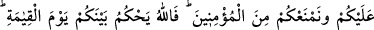

olduğunda günahta onlara ortak olur. Bu durum mü’minlerin bir farz veyâ sünneti ikâme
etmek için onlarla oturduklarında geçerli değildir. İbâdet için onların arasında
bulunması halinde bunu değiştirmeye muktedir olmayıp bundan da memnun değilse
orada oturmasında bir sakınca yoktur. Nitekim Hasan Basrî ve İbn Sîrîn bir cenâzeye
gittiler. Orada ağıt yakılıyordu. Bunun üzerine İbn Sîrîn oradan ayrıldı. Ayrılırken de
Hasan Basrî’yi uyardı. O da ona: “Biz bâtılı gördüğümüz zaman hak olan şeyi
(cenazeyi) terketmedik. Bu yaptığın dinimizde meşrû kılındı mı?” cevabını verdi ve
oradan ayrılmadı. Haddâdî’nin sözü sona erdi.
Anlatıldığına göre Allah Teâlâ Yûşa’ b. Nûn (a.s.)’a: “Ben senin kavminden kırk bin
hayırlı, altmış bin de şerliyi helâk edeceğim.” diye vahyetmesi üzerine Yûşâ (a.s): “Yâ
Rabbi! Şerli insanları anladım. Hayırlı insanları niçin öldüreceksin?” deyince Allah
Teâlâ şu cevabı verdi: “Onlar benim gadaplandığım kimselere kızmadılar. Onlarla
birlikte yediler içtiler.”
Bir kimse hacca veyâ gazâya giderken günahkarlarla berâber olmak durumunda
kalırsa onlarla beraber olması sebebiyle itâatı terketmez. Ancak onların yaptıklarına
kalbiyle buğzeder ve rızâ göstermez. Belki de onun kalbinin buğzunun bereketiyle fâsık
tevbe eder. Kim bir ziyâfete dâvet edilir de orada (şer’î olmayan) oyun-eğlence ve şarkı
ile karşılaşırsa toplumda kendisine uyulan biri değilse oturur, gücü yetiyorsa men eder.
Eğer kadı, müftü ve benzeri gibi kendisine uyulan bir kimse ise engeller, daha sonra
oturur. Eğer o da buna güç yetiremezse oradan ayrılır. Eğer bu durum sofrada olur veyâ
oradakiler içki içerlerse kendisine uyulan bir kişi de olmasa orayı terkeder. Eğer bunun
olacağını oraya gitmeden önce biliyorsa hiç bir şekilde oraya gitmez. Bu kısım,
“Tuhfetü’l-mülûk” adlı eserden alınmıştır.
141- Sizi gözetleyip duranlar, eğer size Allah’tan bir zafer nasip olursa, «Sizinle
berâber değil miydik?» derler. Kâfirlerin zaferden bir nasipleri olursa (bu sefer de
onlara), «Size üstünlük sağlayarak (öldürebileceğimiz halde öldürmeyip)
mü’minlerden korumadık mı?» derler. Artık Allah kıyamet gününde aranızda
hükmedecektir. Allah mü’minler aleyhine kâfirlere aslâ bir yol vermeyecektir.
“Sizi gözetleyip duranlar,” yâni münâfıklar, işinizin hayır mı şer mi olacağını